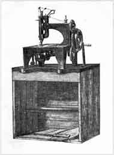
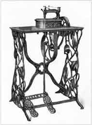
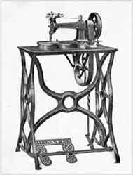
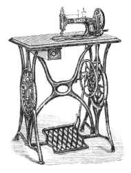
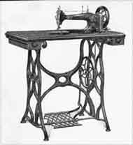

Early Cabinets and Treadle Bases
Click on Thumbnails for Larger Pictures
F01

1851
First Singer Cabinet
a wooden packing case |
F02

1856
Treadle Machine |
F03

1859
Singer Letter 'A'
|
|
F04

Singer Model 12 'New Family' |
F05

1870
Singer Medium
|
|
© Helen Scarth 2002, 2003. All Rights Reserved
This web page or any portion of it may not be
reproduced in any form without the prior written permission of the copyright
holder